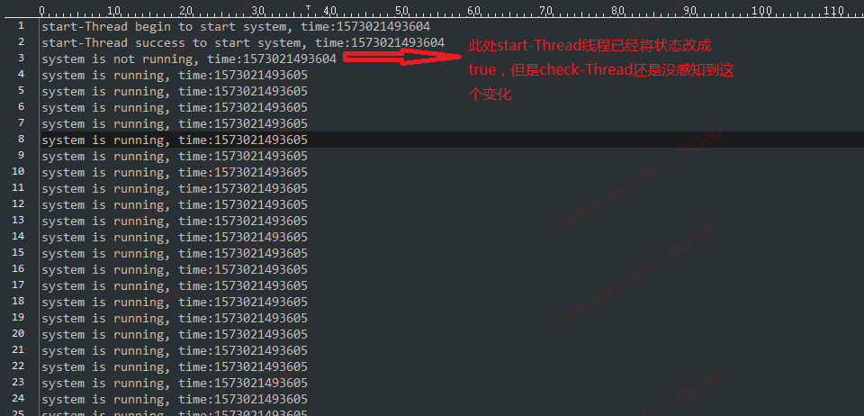

目录
volatile是Java提供的一种轻量级的同步机制，在并发编程中，它也扮演着比较重要的角色。一个硬币具有两面，volatile不会造成上下文切换的开销，但是它也并能像synchronized那样保证所有场景下的线程安全。因此我们需要在合适的场景下使用volatile机制。
我们先使用一个列子来引出volatile的使用场景。
public class VolatileDemo {
boolean started = false;
public void startSystem(){
System.out.println(Thread.currentThread().getName()+" begin to start system, time:"+System.currentTimeMillis());
started = true;
System.out.println(Thread.currentThread().getName()+" success to start system, time:"+System.currentTimeMillis());
}
public void checkStartes(){
if (started){
System.out.println("system is running, time:"+System.currentTimeMillis());
}else {
System.out.println("system is not running, time:"+System.currentTimeMillis());
}
}
public static void main(String[] args) {
VolatileDemo demo = new VolatileDemo();
Thread startThread = new Thread(new Runnable() {
@Override
public void run() {
demo.startSystem();
}
});
startThread.setName("start-Thread");
Thread checkThread = new Thread(new Runnable() {
@Override
public void run() {
while (true){
demo.checkStartes();
}
}
});
checkThread.setName("check-Thread");
startThread.start();
checkThread.start();
}
}上面的列子中，一个线程来改变started的状态，另外一个线程不停地来检测started的状态，如果是true就输出系统启动，如果是false就输出系统未启动。那么当start-Thread线程将状态改成true后，check-Thread线程在执行时是否能立即“看到”这个变化呢？答案是不一定能立即看到。这边我做了很多测试，大多数情况下是能“感知”到started这个变量的变化的。但是偶尔会存在感知不到的情况。请看下下面日志记录：

上面的现象可能会让人比较困惑，为什么有时候check-Thread线程能感知到状态的变化，有时候又感知不到变化呢？这个要从Java的内存模型说起。
我们知道，计算机在执行程序时，每条指令都是在CPU中执行的。而执行指令过程中，势必涉及到数据的读取和写入。程序运行过程中的临时数据是存放在主存（物理内存）当中的，这时就存在一个问题，由于CPU执行速度很快，而从内存读取数据和向内存写入数据的过程跟CPU执行指令的速度比起来要慢的多，因此如果任何时候对数据的操作都要通过和内存的交互来进行，会大大降低指令执行的速度。为了解决这个问题，“巨人们”就设计了CPU高速缓存。
下面举个列子来说明下CPU高速缓存的工作原理：
i = i+1;当线程执行这个语句时，会先从主存当中读取i的值，然后复制一份到高速缓存当中，然后CPU执行指令对i进行加1操作，然后将数据写入高速缓存，最后将高速缓存中i最新的值刷新到主存当中。
这个代码在单线程中运行是没有任何问题的，但是在多线程中运行就会有问题了。在多核CPU中，每条线程可能运行于不同的CPU中，因此每个线程运行时有自己的高速缓存（对单核CPU来说，其实也会出现这种问题，只不过是以线程调度的形式来分别执行的）。本文我们以多核CPU为例,下面举个列子：
同时有2个线程执行上面这段代码，假如初始时i的值为0，那么从直观上看最后i的结果应该是2。但是事实可能不是这样。
可能存在下面一种情况：初始时，两个线程分别读取i的值存入各自所在的CPU的高速缓存当中，然后线程1进行加1操作，然后把i的最新值1写入到内存。此时线程2的高速缓存当中i的值还是0，进行加1操作之后，i的值为1，然后线程2把i的值写入内存。最终结果i的值是1，而不是2。这就是著名的缓存一致性问题。通常称这种被多个线程访问的变量为共享变量。
上面的列子说明了共享变量在CPU中可能会出现缓存不一致问题。为了解决缓存不一致性问题，通常来说有以下2种解决方法：
这2种方式都是硬件层面上提供的方式。
在早期的CPU当中，是通过在总线上加LOCK#锁的形式来解决缓存不一致的问题的。因为CPU和其他部件进行通信都是通过总线来进行的，如果对总线加LOCK#锁的话，也就是说阻塞了其他CPU对其他部件访问（如内存），从而使得只能有一个CPU能使用这个变量的内存。比如上面例子中 如果一个线程在执行 i = i +1，如果在执行这段代码的过程中，在总线上发出了LCOK#锁的信号，那么只有等待这段代码完全执行完毕之后，其他CPU才能从变量i所在的内存读取变量，然后进行相应的操作。这样就解决了缓存不一致的问题。但是上面的方式会有一个问题，由于在锁住总线期间，其他CPU无法访问内存，导致效率低下。
所以就出现了缓存一致性协议。最出名的就是Intel 的MESI协议，MESI协议保证了每个缓存中使用的共享变量的副本是一致的。它核心的思想是：当CPU写数据时，如果发现操作的变量是共享变量，即在其他CPU中也存在该变量的副本，会发出信号通知其他CPU将该变量的缓存行置为无效状态，因此当其他CPU需要读取这个变量时，发现自己缓存中缓存该变量的缓存行是无效的，那么它就会从内存重新读取。
通过上面对Java内存模型的讲解，我们发现每个线程都有各自对共享变量的副本拷贝，代码执行是对共享变量的修改，其实首先修改的是CPU中高速缓存中副本的值。而这个修改对其他线程是不可见的，只有当这个修改刷新回主存中（刷新的时机不一定）并且其他线程重新读取这个主存中的值时，这个修改才对其他线程可见。这个也就解释了上面列子中的现象。check-Thread线程缓存了started的值是false，start-Thread线程将started副本的值改变成true后并没有立马刷新到主存中去，所以当check-Thread线程再次执行时拿到的started值还是false。
在正式讲volatile之前，我们先来解释下并发编程中经常遇到的“三性”。
可见性
可见性是指当多个线程访问同一个共享变量时，一个线程修改了这个变量的值，其他线程能够立即看得到修改的值。
原子性
原子性是指一个操作或者多个操作要么全部执行并且执行的过程不会被任何因素打断，要么就都不执行。
有序性
有序性是指程序执行的顺序按照代码的先后顺序执行。
上面的列子中存在的问题是：start-Thread线程将started状态改变之后，check-Thread线程不能立马感知这个变化。也就是说这个共享变量的变化在线程之间是不可见的。那怎么来解决共享变量的可见性问题呢？Java中提供了volatile关键字这种轻量级的方式来解决这个问题的。volatile的使用非常简单，只需要用这个关键字修饰你的共享变量就行了：
private volatile boolean started = false;volatile能达到下面两个效果：
volatile还有一个特性：禁止指令重排序优化。
重排序是指编译器和处理器为了优化程序性能而对指令序列进行排序的一种手段。但是重排序也需要遵守一定规则：
重排序操作不会对存在数据依赖关系的操作进行重排序
比如：a=1;b=a; 这个指令序列，由于第二个操作依赖于第一个操作，所以在编译时和处理器运行时这两个操作不会被重排序。
重排序是为了优化性能，但是不管怎么重排序，单线程下程序的执行结果不能被改变
比如：a=1;b=2;c=a+b这三个操作，第一步（a=1)和第二步(b=2)由于不存在数据依赖关系，所以可能会发生重排序，但是c=a+b这个操作是不会被重排序的，因为需要保证最终的结果一定是c=a+b=3。
重排序在单线程模式下是一定会保证最终结果的正确性，但是在多线程环境下，可能就会出问题。还是用上面类似的列子：
public class VolatileDemo {
int value = 1;
private boolean started = false;
public void startSystem(){
System.out.println(Thread.currentThread().getName()+" begin to start system, time:"+System.currentTimeMillis());
value = 2;
started = true;
System.out.println(Thread.currentThread().getName()+" success to start system, time:"+System.currentTimeMillis());
}
public void checkStartes(){
if (started){
//关注点
int var = value+1;
System.out.println("system is running, time:"+System.currentTimeMillis());
}else {
System.out.println("system is not running, time:"+System.currentTimeMillis());
}
}
}上面的代码我们并不能保证代码执行到“关注点”处，var变量的值一定是3。因为在startSystem方法中的两个复制语句并不存在依赖关系，所以在编译器进行代码编译时可能进行指令重排。也就是先执行
started = true;执行完这个语句后，线程立马执行checkStartes方法，此时value值还是1，那么最后在关注点处的var值就是2，而不是我们想象中的3。
使用volatile关键字修饰共享变量便可以禁止这种重排序。若用volatile修饰共享变量，在编译时，会在指令序列中插入内存屏障来禁止特定类型的处理器重排序。volatile禁止指令重排序也有一些规则：
当第二个操作是voaltile写时，无论第一个操作是什么，都不能进行重排序
当地一个操作是volatile读时，不管第二个操作是什么，都不能进行重排序
当第一个操作是volatile写时，第二个操作是volatile读时，不能进行重排序
volatile并不是在所有场景下都能保证线程安全的。下面举个列子：
public class Counter {
public static volatile int num = 0;
//使用CountDownLatch来等待计算线程执行完
static CountDownLatch countDownLatch = new CountDownLatch(30);
public static void main(String []args) throws InterruptedException {
//开启30个线程进行累加操作
for(int i=0;i<30;i++){
new Thread(){
public void run(){
for(int j=0;j<10000;j++){
num++;//自加操作
}
countDownLatch.countDown();
}
}.start();
}
//等待计算线程执行完
countDownLatch.await();
System.out.println(num);
}
}上面的代码中，每个线程都对共享变量num加了10000次，一共有30个线程，那么感觉上num的最后应该是300000。但是执行下来，大概率最后的结果不是300000（大家可以自己执行下这个代码）。这是因为什么原因呢？
问题就出在num++这个操作上，因为num++不是个原子性的操作，而是个复合操作。我们可以简单讲这个操作理解为由这三步组成:
加入现在有两个线程在执行，线程1在执行到step2的时候被阻断了，CPU切换给线程2执行，线程2成功地将num值加1并刷新到内存。CPU又切会线程1继续执行step2，但是此时不会再去拿最新的num值,step2中的num值是已经过期的num值。
上面代码的执行结果和我们预期不符的原因就是类似num++这种操作并不是原子操作，而是分几步完成的。这些执行步骤可能会被打断。在中情况下volatile就不能保证线程安全了，需要使用锁等同步机制来保证线程安全。
synchronized关键字是防止多个线程同时执行一段代码，那么就会很影响程序执行效率，而volatile关键字在某些情况下性能要优于synchronized，但是要注意volatile关键字是无法替代synchronized关键字的，因为volatile关键字无法保证操作的原子性。通常来说，使用volatile必须具备以下2个条件：
下面列举两个使用场景
class Singleton{
private volatile static Singleton instance = null;
private Singleton() {
}
public static Singleton getInstance() {
if(instance==null) {
synchronized (Singleton.class) {
if(instance==null)
instance = new Singleton();
}
}
return instance;
}
}